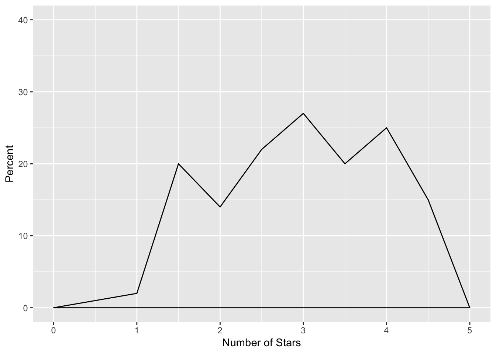
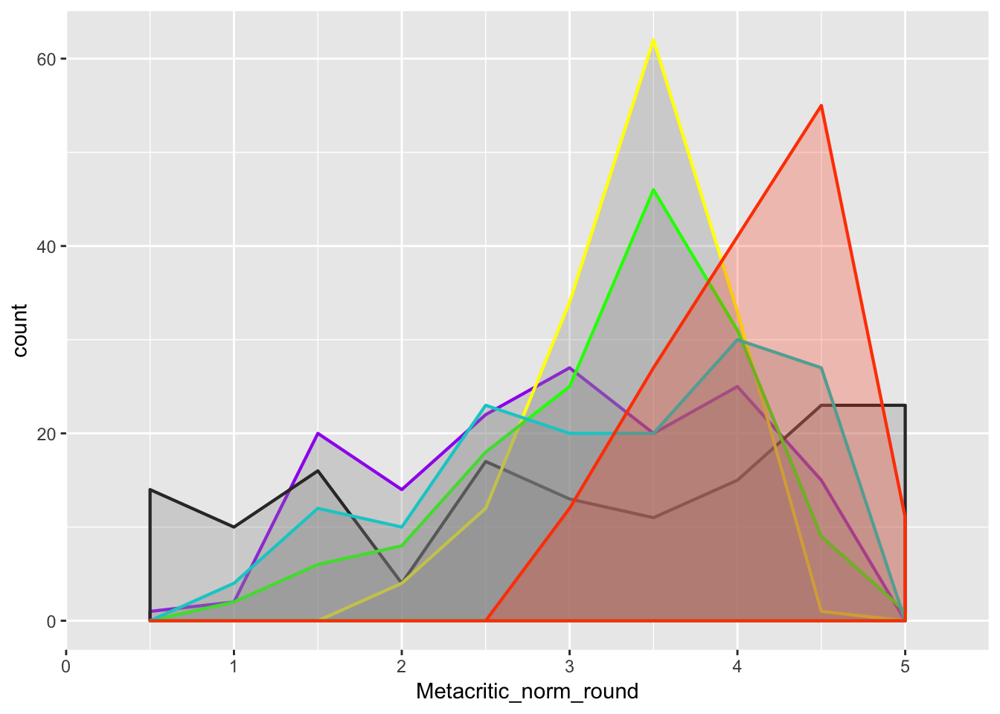
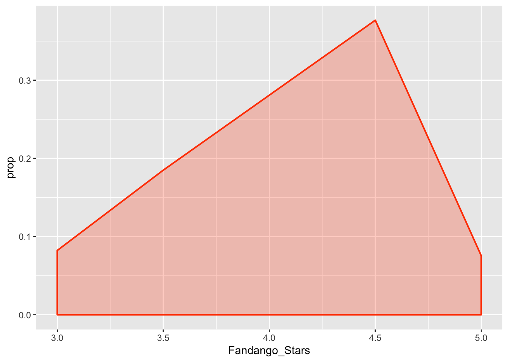
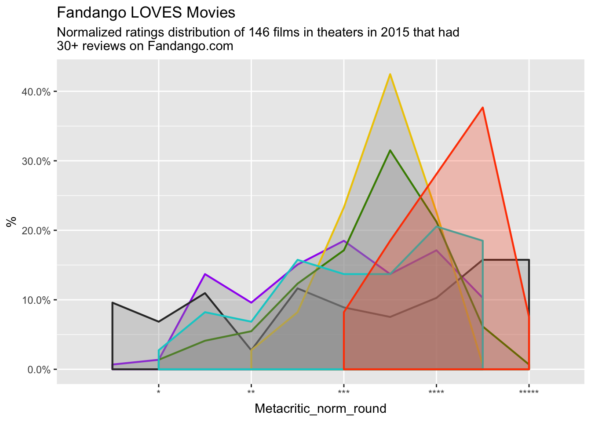
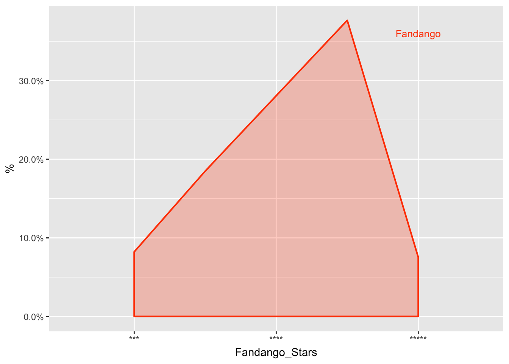
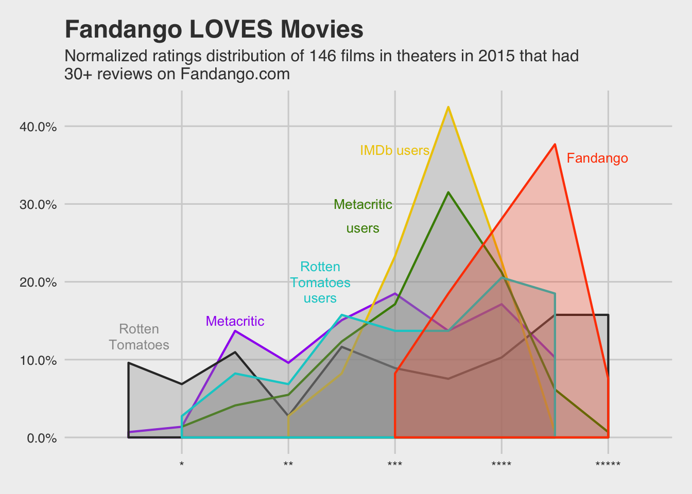

WilliamNorfolk-Visualization Fandango Data
William Norfolk
9/21/2019
Load all packages needed for data upload and cleaning methods.
library(tidyverse)
library(dplyr)
library(readr)
library(knitr)
library(ggthemes)Here is the original image we are trying to recreate and the link to the article where it was originally published.
Be Suspicious of Online Movie Ratings, Especially Fandango’s
Download data from GitHub and copy data files into the project directory (i.e. put them in the same folder as the project) to set a path.
Our data file is in a nicely packed csv file so we will use the read.csv function. The header function reads the first line of the data set and interprets th information as the titles for each variable. A quick glance at the raw data and we see the header is indeed present so we will keep header logic TRUE. And finally, we will keep our data seperated by a comma.
moviedata <- read.csv("./Raw Data/fandango_score_comparison.csv", header = TRUE, sep = ",")Take a look at the data to see the variable names, observations, variable classes, and all around what you are working with.
glimpse(moviedata)## Observations: 146
## Variables: 22
## $ FILM <fct> "Avengers: Age of Ultron (2015)", "Ci…
## $ RottenTomatoes <int> 74, 85, 80, 18, 14, 63, 42, 86, 99, 8…
## $ RottenTomatoes_User <int> 86, 80, 90, 84, 28, 62, 53, 64, 82, 8…
## $ Metacritic <int> 66, 67, 64, 22, 29, 50, 53, 81, 81, 8…
## $ Metacritic_User <dbl> 7.1, 7.5, 8.1, 4.7, 3.4, 6.8, 7.6, 6.…
## $ IMDB <dbl> 7.8, 7.1, 7.8, 5.4, 5.1, 7.2, 6.9, 6.…
## $ Fandango_Stars <dbl> 5.0, 5.0, 5.0, 5.0, 3.5, 4.5, 4.0, 4.…
## $ Fandango_Ratingvalue <dbl> 4.5, 4.5, 4.5, 4.5, 3.0, 4.0, 3.5, 3.…
## $ RT_norm <dbl> 3.70, 4.25, 4.00, 0.90, 0.70, 3.15, 2…
## $ RT_user_norm <dbl> 4.30, 4.00, 4.50, 4.20, 1.40, 3.10, 2…
## $ Metacritic_norm <dbl> 3.30, 3.35, 3.20, 1.10, 1.45, 2.50, 2…
## $ Metacritic_user_nom <dbl> 3.55, 3.75, 4.05, 2.35, 1.70, 3.40, 3…
## $ IMDB_norm <dbl> 3.90, 3.55, 3.90, 2.70, 2.55, 3.60, 3…
## $ RT_norm_round <dbl> 3.5, 4.5, 4.0, 1.0, 0.5, 3.0, 2.0, 4.…
## $ RT_user_norm_round <dbl> 4.5, 4.0, 4.5, 4.0, 1.5, 3.0, 2.5, 3.…
## $ Metacritic_norm_round <dbl> 3.5, 3.5, 3.0, 1.0, 1.5, 2.5, 2.5, 4.…
## $ Metacritic_user_norm_round <dbl> 3.5, 4.0, 4.0, 2.5, 1.5, 3.5, 4.0, 3.…
## $ IMDB_norm_round <dbl> 4.0, 3.5, 4.0, 2.5, 2.5, 3.5, 3.5, 3.…
## $ Metacritic_user_vote_count <int> 1330, 249, 627, 31, 88, 34, 17, 124, …
## $ IMDB_user_vote_count <int> 271107, 65709, 103660, 3136, 19560, 3…
## $ Fandango_votes <int> 14846, 12640, 12055, 1793, 1021, 397,…
## $ Fandango_Difference <dbl> 0.5, 0.5, 0.5, 0.5, 0.5, 0.5, 0.5, 0.…Looking at the published figure at first glance it looks like a density plot, so let’s try to recreate the conditions for on piece of the data. I selected the Metacritic data for this example, but any of the included variables would work.
After some guess and check (not displayed here) the different components of the mapping and asthetics can be determined by generating a number of plots with small changes in the code in effort to match the published figure.
The code below shows the results of this guess and check process to produce a geom_density plot that resembles the published figure.
testplot <- ggplot(moviedata, aes(Metacritic_norm_round)) + geom_density(stat = "bin", binwidth = 0.5) + scale_x_continuous(name = "Number of Stars", limits = c(0, 5)) + scale_y_continuous(name = "Percent", limits = c(0,40))
testplot
The mapping and aesthetics look similar to the published figure, so now we apply the same details to all of the variable in the figure. In addition, colors, shading, and fade (alpha) are added to match the published figure.
Arguments Used:
stat = the statistical transformation that will be used on the data
binwidth = size of the bins used only with the “bin” stat (this is how the smooth lines of geom_density were converted to sharp lines)
color = the color of the density curve line
fill = the color of the filled area below the density curve
alpha = fades the colors so the increase in intensity when overlapping
size = thickness of the curve line
mastergeom_density <- moviedata %>% ggplot() +
geom_density(aes(x = Metacritic_norm_round), stat = "bin", binwidth = 0.5, color = "purple", fill = "grey60", alpha = 0.3, size = 0.75) +
geom_density(aes(x = RT_norm_round), stat = "bin", binwidth = 0.5, color = "grey20", fill = "grey60", alpha = 0.3, size = 0.75) +
geom_density(aes(x = IMDB_norm_round), stat = "bin", binwidth = 0.5, color = "yellow", fill = "grey60", alpha = 0.3, size = 0.75) +
geom_density(aes(x = Metacritic_user_norm_round),stat = "bin", binwidth = 0.5, color = "green", fill = "grey60", alpha = 0.3, size = 0.75) +
geom_density(aes(x = RT_user_norm_round), stat = "bin", binwidth = 0.5, color = "cyan3", fill = "grey60", alpha = 0.3, size = 0.75) +
geom_density(aes(x = Fandango_Stars), stat = "bin", binwidth = 0.5, color = "orangered1", fill = "orangered1", alpha = 0.25, size = 0.75)
mastergeom_density
Finally, we replicate the labels and title/subtitle from the published figure.
mastergeom_density + labs(title = "Fandango LOVES Movies", subtitle = "Normalized ratings distribution of 146 films in theaters in 2015 that had 30+ reviews on Fandango.com", x = "Number of Stars") + scale_y_continuous(name = "Percent", limits = c(0,70))
This figure looks pretty close to the published figure, however the y-axis is troubling. In the code above the axis was named percent, but it appears the figure is still displaying counts here as IMDB Users variable should only slightly extend above 40%.
To solve this issue, the y-axis must be scaled to percent based on the counts of the data. The easiest way to acomplish this is to change the stat argument in geom_density and then scale_y_axis to labels = scales::percent_format to ensure the shape of the figure is maintained. However if this is done with the above figure you lose all of the sharp lines in the density curve because you lose the “binwidth” argument. The resulting figure is reminiscent of the correct figure but the lines for each variable are smooth.
To solve this issue the entire figure must be revisited. At second glance the figure could be a frequency polygon (geom_freqpoly) or an area plot (geom_area) as well.
After another round of guess and check it appears we are working with a area plot. See the test plot below for mapping and aesthetics.
anothertest <- moviedata %>% ggplot() + geom_area(aes(x = Fandango_Stars, y = ..prop..), stat = "count", color = "orangered1", fill = "orangered1", alpha = 0.25, size = 0.75)
anothertest 
Apply the mapping and aesthetics to all of the variable to produce another master plot.
And add the appropriate title and labels.
stars <- c("*", "**", "***", "****", "*****")
mastergeom_area <- moviedata %>% ggplot() +
geom_area(aes(x = Metacritic_norm_round, y = ..prop..), stat = "count", color = "purple", fill = "grey60", alpha = 0.3, size = 0.75) +
geom_area(aes(x = RT_norm_round, y = ..prop..), stat = "count", color = "grey20", fill = "grey60", alpha = 0.3, size = 0.75) +
geom_area(aes(x = IMDB_norm_round, y = ..prop..), stat = "count", color = "gold2", fill = "grey60", alpha = 0.3, size = 0.75) +
geom_area(aes(x = Metacritic_user_norm_round, y = ..prop..), stat = "count", color = "chartreuse4", fill = "grey60", alpha = 0.3, size = 0.75) +
geom_area(aes(x = RT_user_norm_round, y = ..prop..), stat = "count", color = "cyan3", fill = "grey60", alpha = 0.3, size = 0.75) +
geom_area(aes(x = Fandango_Stars, y = ..prop..), stat = "count", color = "orangered1", fill = "orangered1", alpha = 0.25, size = 0.75)
finaldraft <- mastergeom_area + scale_y_continuous(name = "%", labels = scales::percent_format()) + scale_x_discrete(limits = 1:5, labels = stars) + labs(title = "Fandango LOVES Movies", subtitle = "Normalized ratings distribution of 146 films in theaters in 2015 that had\n30+ reviews on Fandango.com")
finaldraft
The resulting plot looks much closer to the published figure. In terms of the axes, data, and scaling. Noteably, the resulting figure has produced “blunt ends” on the data (most noticeable in the orange Fandango data), I am still unsure how to fix this issue.
The final step is to add the appropriate labels to the area plot. The way the labels are distrubuted it is probably easier to use annotate instead of geom_text.
finaltestplot <- moviedata %>% ggplot() + geom_area(aes(x = Fandango_Stars, y = ..prop..), stat = "count", color = "orangered1", fill = "orangered1", alpha = 0.25, size = 0.75) + scale_y_continuous(name = "%", labels = scales::percent_format()) + scale_x_discrete(limits = 1:5, labels = stars)
finaltestplot + annotate("text", x = 5, y = 0.36, label = "Fandango", color = "orangered1", size = 3.5)
Apply labels to make the final plot.
finalplot <- finaldraft +
annotate("text", x = 4.9, y = 0.36, label = "Fandango", color = "orangered1", size = 3.5) +
annotate( "text", x = 3, y = 0.37, label = "IMDb users", color = "gold2", size = 3.5) +
annotate("text", x = 2.7, y = 0.30, label = "Metacritic", color = "chartreuse4", size = 3.5) +
annotate("text", x = 2.7, y = 0.27, label = "users", color = "chartreuse4", size = 3.5) +
annotate("text", x = 2.3, y = 0.22, label = "Rotten", color = "cyan3", size = 3.5) +
annotate("text", x = 2.3, y = 0.20, label = "Tomatoes", color = "cyan3", size = 3.5) +
annotate("text", x = 2.3, y = 0.18, label = "users", color = "cyan3", size = 3.5) +
annotate("text", x = 1.5, y = 0.15, label = "Metacritic", color = "purple", size = 3.5) +
annotate("text", x = 0.6, y = 0.12, label = "Tomatoes", color = "grey60", size = 3.5) +
annotate("text", x = 0.6, y = 0.14, label = "Rotten", color = "grey60", size = 3.5)
finalplot + theme_fivethirtyeight()
In summation, the new graphic is reasonably similar to the original published figure in basic structure and mapping. Some small aesthetic details and finishing formatting are missing.
I was unsuccessful at recreating the three following components of the original figure.
- The star images on the x-axis scale. My efforts to replace the axis collapsed the entire structure of the axis and rendered the plot unreadable.
- The blunt ends on each of the individual area plots. In the original figure the ends extend linearly to the base of the x-axis (similar to their appearance in my efforts with geom_density), however I was unable to indentify a method to fix this issue.
- The small label line associated with the “Metacritic users” area plot. I was unable to add this without adding a line that extended across the entire figure.